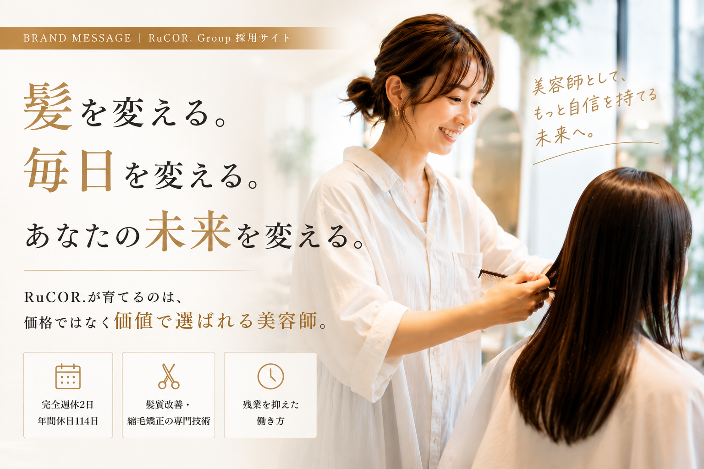
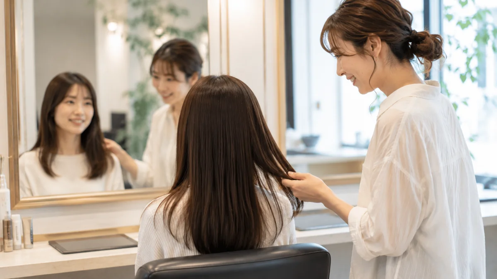
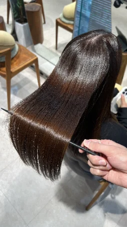
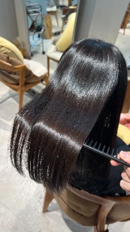
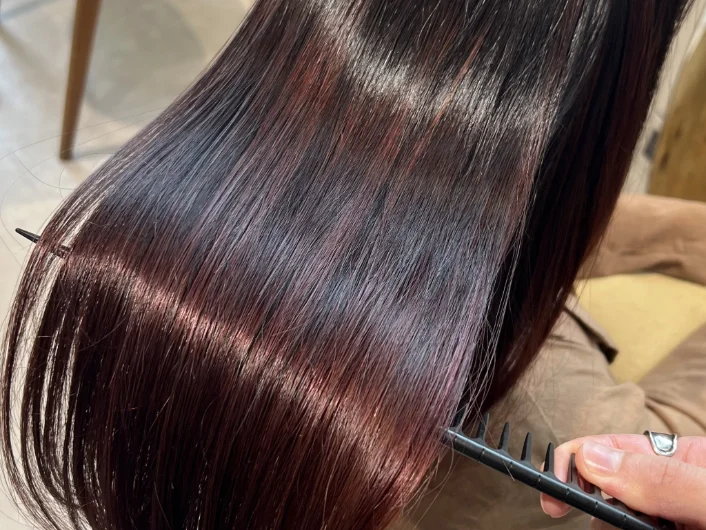
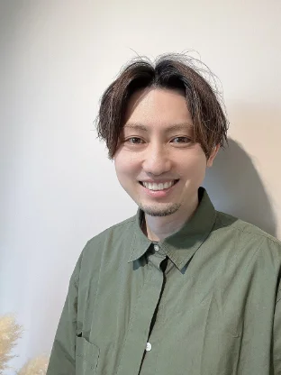
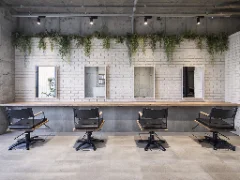
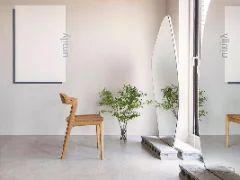
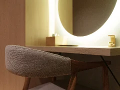

こんな毎日になっていませんか
―「今月の数字、また厳しいな」
―「新規は入るのに、
なぜか一回で終わる」
―「この技術で、
単価を上げていいのか自信がない」
―「気づけば今日も、
休む間もなく1日が終わった」
―「"あなたにお願いしたい"と
言われたことが、まだない」
―「10年後も、
この仕事を続けられているだろうか」
技術も経験も積んできたのに、
給料も自信も増えていかない。
辞めたいわけじゃない。
目の前のお客様に、
根拠を持って向き合いたい。
その積み重ねで、
仕事にもっと自信を持ちたいだけ。
技術が足りないわけではありません。
「選ばれる理由」を作る環境が、なかっただけです。
| 他サロン | RuCOR. | |
|---|---|---|
| お客様との向き合い方 | 回転重視 | 一人のお客様としっかり向き合う |
| 単価 | 低単価で疲れるだけ | 高単価だから焦らず向き合える |
| 予約 | 掛け持ち多数 | 予約をコントロールできる |
| 強みの作り方 | 技術だけで判断される | 技術＋人間力の両方が強みになる |
マンツーマン×髪質改善サロンだからできる働き方
美容師という仕事は好き。
でも、この先も安心して続けられるだろうか。
物価は上がり続ける。
美容室も、値上げが必要になる時代。
その中で選ばれるのは、
「安い美容室」でも、「流行だけを追う美容師」でもありません。
お客様から「あなたにお願いしたい。」そう言われる美容師です。
RuCOR.が育てたいのは、
価格ではなく、価値で選ばれる美容師です。
私たちが目指しているのは、
髪を綺麗にすることだけではありません。
お客様の人生を、少し豊かにすることです。
朝の支度が楽になる。
鏡を見るのが楽しみになる。
湿気の日も気にせず出かけられる。
子どもと過ごす時間が増える。
自分に少し自信が持てる。
髪が変わることで、毎日は少し豊かになります。
だからRuCOR.では、髪質改善を軸にしています。
技術的なところ
クセこそが、悩みの根本
日本人の9割はクセ毛だと言われています。ざらつき、広がり、艶のなさ——ダメージだと思われがちなその悩みの大半は、実はクセが原因です。トリートメントで治らない、持ちが悪い、効果を感じにくいのも同じ理由。RuCOR.の髪質改善は、その根本から直していく技術です。ただ真っ直ぐにするだけではありません。
人間的なところ
悩みに、寄り添う
悩みのない人よりも、悩みを持っている人の方が多い。だからこそ、その解決をしてあげることで、髪だけでなく気持ちにも寄り添うことができます。技術で応え、人として向き合う。それがRuCOR.の髪質改善です。
髪を通して、お客様の人生を少し豊かにする。
RuCOR.は、強みを「作れる」サロンです
髪質改善・縮毛矯正を軸に、技術だけでなくカウンセリング・リピート・単価アップまで一緒に身につけていきます。

軸となる武器
髪質改善・縮毛矯正
他のサロンでは簡単に真似できない専門性を、理論から学び直せます。
リピートにつなげる力
カウンセリング教育
「また相談したい」を生む対話力を、実践の中で身につけます。
安心して向き合える環境
新規集客とマンツーマン
新規のお客様が絶えず来店し、一人ひとりとじっくり向き合えます。
「強みを見つける」のではなく、「強みを作る」。それがRuCOR.の育成の考え方です。
自分の武器、RuCOR.で作ってみませんか。
まずは話を聞いてみる入社後、こんな変化が起こります
STEP 1
髪質改善を学ぶ
STEP 2
自信を持って提案できる
STEP 3
指名が増える
STEP 4
売上が安定する
STEP 5
休日も仕事のことを考えなくなる
美容師が、もっと楽しくなる。
スタッフストーリー
店長
以前はカラーばかりで単価も上がらず、将来が不安でした。でもRuCOR.で髪質改善を学んでから指名が増え、美容師がもっと楽しくなりました。
入社前
大手サロンで経験を積んでいたが、自分の強みが分からずにいた。
悩み
指名理由を聞かれても、うまく答えられないことに焦りを感じていた。
入社後
髪質改善の技術とカウンセリングを一から学び直した。
今
自分の言葉で強みを語れるようになり、指名理由も明確になった。
指名率30%台 → 90%
スタイリスト
以前は仕事に追われて自分の時間がありませんでした。でもRuCOR.に入ってから、仕事もプライベートも諦めずに楽しめるようになりました。
入社前
前職でも売上や給与はそこそこあったが、仕事に追われて自分の時間がなかった。
悩み
忙しさが評価されている実感に繋がらず、このままでいいのか迷っていた。
入社後
RuCOR.の完全週休2日・残業の少ない働き方で、自分の時間を取り戻せた。
今
休みの日は旅行や技術セミナーに出かけ、成長もプライベートも楽しめている。
プライベートの充実度 UP
数字で見るRuCOR.
完全週休2日
火曜定休・シフト制
WORK STYLE
年間休日114日
夏期・冬季休暇あり
WORK STYLE
残業ほぼなし
19時退社の徹底
WORK STYLE
社会保険完備
将来も安心して働ける
BENEFIT
高単価サロン
12,000〜16,000円
SALON
平均指名率80%超
信頼される技術と接客
SALON
お客様の10年先も、綺麗へ。
技術で出会い、人として信頼される。縁ある人の人生の質を上向かせる会社でありたいと考えています。
大切にしている6つのこと
01
成長に本気で取り組む
技術と人間力を高め、昨日の自分を超え続ける。
02
技術を磨き続ける
要望に応えるだけでなく、信頼される提案を追い求める。
03
挑戦を歓迎する
失敗を否定せず、打席に立ったことを評価する。
04
信じて、支える
1人が強いチームじゃなく、全員で強いチームを目指す。
05
自責で向き合う
人や環境のせいにせず、自分にできることを考える。
06
人間性を磨く
仲間やお客様を否定せず、可能性として捉える。
技術へのこだわり





髪質改善 ── RuCOR.の専門性の軸となる技術。
縮毛矯正 ── 難易度の高い技術も、理論から学べます。
オーナーからのメッセージ

髪にドラマを。認定講師
福士 和也
美容師という仕事は、技術を磨けば磨くほど、お客様の毎日を変えられる仕事です。RuCOR.が髪質改善を軸にしているのも、それが一番お客様の人生に寄り添える技術だと思っているからです。
価格ではなく、価値で選ばれる美容師を、一緒に育てていきたいと思っています。まずは気軽に話を聞きに来てください。
教育制度
- ✓オーナーは髪質改善メーカー認定講師
- ✓髪質改善メニューのマニュアル完備
- ✓夢の髪質を叶えるカウンセリング術
- ✓デビューまでの明確なステップ
- ✓練習時間の確保（営業時間内練習あり）
- ✓外部講習への参加サポート
- ✓技術だけでなく理論から学べるカリキュラム
- ✓撮影・SNS発信のサポート
福利厚生
人材像
こんな人と一緒に働きたい
- 成長する意欲のある人
- 美容師という仕事が好きな人
- 人や時間を大切にできる人
- 素直に学び続けられる人
- 誠実に人と向き合える人
こんな人になってほしい
- 技術だけでなく、人として信頼される人
- 応援したいと思ってもらえる人
- 自分も、周りの人も大切にできる人
- 感謝を忘れず、弱みも認め成長できる人
- 自分のことをちゃんと認められる人
経験はあるけれど、自分だけの強みをまだ作れていない方を、特に歓迎します。
RuCOR. Group の3ブランド
今回の募集は、髪質改善に特化したブランド「umily by RuCOR.」でのポジションです。

HAIR SALON
RuCOR.
技術とヘッドスパ・リラクゼーションを軸にした美容室。

HAIR SALON
umily by RuCOR.
髪質改善を軸にした美容室。

HEAD SPA
ヒトトイロ
ヘッドスパ専門店。
募集要項
| 職種 | スタイリスト |
|---|---|
| 仕事内容 | 髪質改善・縮毛矯正・カラー中心のサロンワーク |
| 応募資格 | 美容師免許保持者 |
| 雇用形態 | 正社員（試用期間3ヶ月、条件変動なし） |
| 給与 | 基本給25万円〜27万円（超過分は歩合40%で計算）＋店販歩合10% |
| 固定残業代 | 14時間分を含む |
| 給与実績 | 入社半年／29歳スタイリスト 月給33万円 |
| その他手当 | 管理手当1万円／外部講師ヘルプ2万円 |
| 勤務時間 | 9:40〜19:10 |
| 休日・休暇 | 完全週休2日制（火曜＋希望休1日） |
| 長期休暇 | 夏季5日・年末年始5日 |
| 福利厚生・待遇 | 社会保険完備／健康診断／産休育休／研修制度／社員割引 |
| 勤務地 | 〒214-0014 神奈川県川崎市多摩区登戸2662-2 ヨシザワ第8ビル5F-B（umily by RuCOR.） |
よくある質問
Q. 新規のお客様も担当できますか？
A. はい。入社後の研修終了後から担当できます。
Q. SNS発信が苦手でも大丈夫ですか？
A. 発信が得意でなくても問題ありません。RuCOR.ではSNSは強制していません。
Q. 経験が浅くても応募できますか？
A. 美容師免許をお持ちであれば経験年数は問いません。研修でしっかりキャッチアップできます。
Q. 完全週休2日制の休みはしっかり取れますか？
A. はい。火曜定休に加え希望休1日を組み合わせた完全週休2日制で、プライベートの時間もしっかり確保できます。
Q. 髪質改善・縮毛矯正が未経験でも大丈夫ですか？
A. はい。マニュアルと研修で基礎から学べるので、未経験からでも技術を身につけられます。
Q. 見学だけでもいいですか？
A. はい、まずはサロンの雰囲気を見に来ていただくだけでも歓迎です。
「強みがある美容師」ではなく、
「強みを作れる美容師」になりませんか
その強みが、価格ではなく価値で選ばれる理由になります。
まずは見学だけでも大歓迎です。「応募」というより、気軽にLINEで話してみる感覚で大丈夫です。
LINEで話を聞く・応募する